Lo que falla con las siete ramas juntas
Recorrí los sitios donde dos ramas del 19 nov. tocan lo mismo, en el index.html que se sube, a 360 × 640 y a 1280 × 720, en castellano y en inglés.
Tres fallos ciertos. Uno, arreglado: no cambia nada que se vea. Los otros dos cambian lo que se ve y esperan tu letra: dos preguntas, cada una con su recomendada.
Montado: la 1C (21 nov.)
En el móvil, con los avisos bloqueados, la fila dice «Bloqueados · permisos del sitio › Notificaciones» y la nota larga solo sale en el ordenador. Ajustes cabe a 360 × 640 y 730 en los dos idiomas, con Chrome, Edge, Firefox y Safari. La 2A (la miniventana) la monta la sesión del aviso del PC.
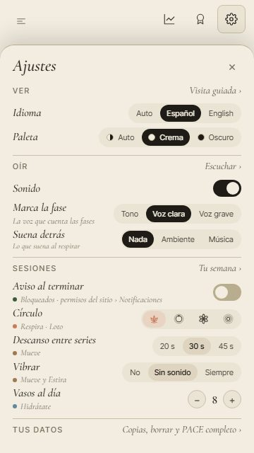
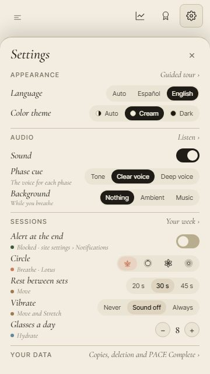
Prueba: tests/ajustes-bloqueados-movil.spec.js, que cae sin el cambio (27 px).
Arreglado, sin nada que elegir
La campanita del sello se metía en la campana del Foco
Al acabar un Foco suenan tres toques de campana (lo pediste el 19). Si ese Foco gana un sello (el primero gana «Primer paso»), su aviso salía a los 0,4 s y su campanita sonaba entre el primer toque y el segundo: se oían cuatro golpes mezclados. Ahora el aviso sale a su hora y su campanita suena justo al acabar el tercer toque, mientras el aviso aún se ve.
Prueba: tests/campana-sello.spec.js, que cae contra la 0.212.0 (la campanita sonaba a los 407 ms).
Pregunta 1 · Ajustes en el móvil con los avisos bloqueados
En un Android con Chrome (la web, no la app), si las notificaciones están bloqueadas, Ajustes pide 27 px de scroll a 360 × 640 (42 px en Edge en castellano) y corta «Tus datos». Se juntan dos ramas: la caza quitó la nota para que cupiera, y el aviso del PC trajo otra, de dos líneas, que dice cómo quitar el bloqueo. La prueba de la unión medía sin pantalla táctil, sin la fila «Vibrar», y cabía.
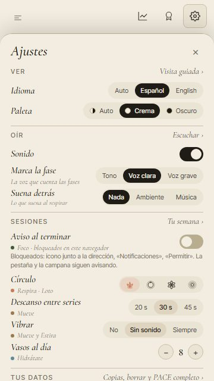
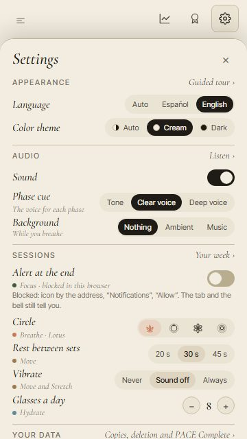
Probé también la nota en una sola línea («Bloqueados: permisos del sitio › Notificaciones › Permitir.»): sigue pidiendo 12 px. No la pongo como opción.
¿Qué dice Ajustes en el móvil cuando los avisos están bloqueados?
El cómo, en la línea pequeña de la fila: «Bloqueados · permisos del sitio › Notificaciones». La nota larga, solo en el ordenador. 0 px de scroll en los dos idiomas, y sigue diciendo dónde se quita.
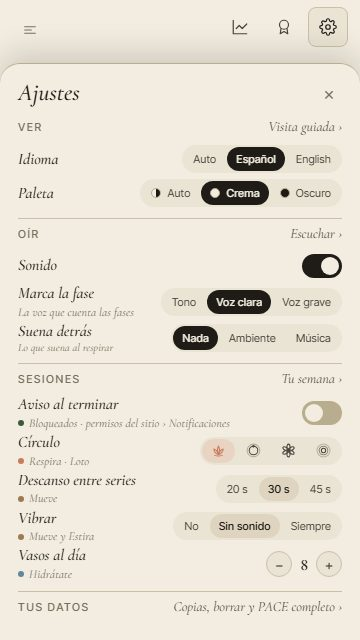
Sin nota en el móvil, como dejó la caza: la fila dice «Foco · bloqueados en este navegador» y nada más. 0 px, pero no dice dónde se quita.
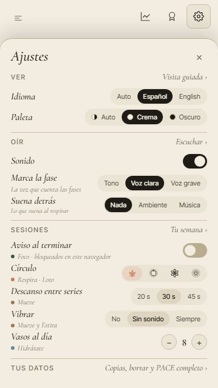
En inglés, C diría «Blocked · site settings › Notifications» (foto ajustes-c-en.jpg). En el móvil, «la pestaña sigue avisando» tampoco sirve: la pestaña no se ve.
Pregunta 2 · La miniventana durante la jornada
La miniventana (2B) se probó con el Foco suelto. Con «A tu ritmo» y un bloque de la jornada en marcha, falla en tres cosas:
- dice «Foco · Ciclo 1 / 4» mientras el aro dice «Bloque 1 de 8»;
- al acabar el bloque no se pone en terracota con «Foco terminado»: pasa directa a contar la pausa, y quien está en otra ventana no ve que acabó;
- en la pausa de la jornada enseña «Pausar», y ese botón no hace nada: la cuenta sigue. El aro no la deja pausar.
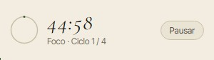
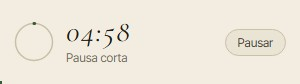
¿Cómo habla la miniventana durante la jornada?
Como el aro, y avisa al acabar. «Foco · Bloque 1 de 8»; al acabar el bloque, «Foco terminado» en terracota con «Volver», como fuera de la jornada, hasta que vuelves a PACE; y en la pausa, la cuenta sin botón.
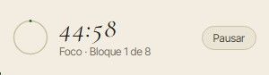
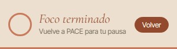
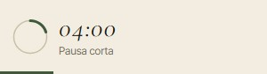
Lo mínimo. «Bloque 1 de 8» y sin «Pausar» en la pausa de la jornada. Al acabar el bloque sigue pasando directa a la pausa, como hoy.
Lo que miré y está bien
- El runner: la voz que dice el número que pone la pantalla, los cambios dentro de un paso y «Paso N de M» sin descansos. «Cambia de lado» deja sitio al número siguiente en los ocho pasos con cambio, en las dos voces y los dos idiomas.
- La home: el bloque en marcha y pausado, la ventana de antes de comer, en plena comida, el cierre contando, «Cerrar la jornada», «Jornada cerrada» y «Seguir por libre». Sin scroll y sin textos cortados en los cuatro tamaños.
- Los avisos: «2 sellos nuevos · Primer paso y uno más» cabe en el aro a 360 px; las notificaciones del PC no se duplican con la pausa de la jornada; la visita guiada no deja salir sellos encima.
- Ajustes en el ordenador: cabe a 1280 × 720 con la nota de Chrome, Edge, Firefox y Safari, en los dos idiomas.
Fuera de la unión (ya pasaba antes): si repites la visita guiada desde Ajustes con un bloque de la jornada en marcha y el bloque acaba, la ventana de la pausa sale encima de la visita.